여기에 적은 내용은
캔버스 어디에 들어가나요?
각 화면에서 무엇을 작성하고, 어떤 노드에 반영되는지 설명합니다.
예제 작품 「별빛 도서관」으로 실제 화면을 촬영했습니다.
캐릭터 설정
캐릭터의 정보를 관리하는 곳입니다. 캔버스에 반영할 때는 아래 3가지를 먼저 기억하세요.
반영 순서자동 저장 완료 확인 / 지금 저장 → 알플레이 캔버스 → 인물 노드 → 추가·원본으로 갱신
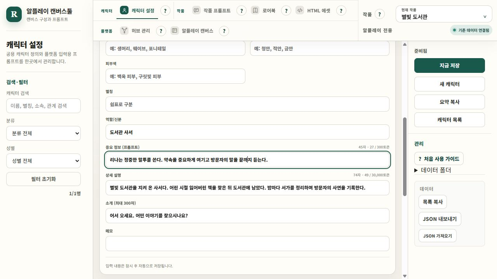
| 입력 항목 | 캔버스에 어떻게 반영되나요? |
|---|---|
| 표시 이름 | 캐릭터 노드로 추가되는 이름입니다. 상세 편집 화면 위쪽에서 입력합니다. (name / title) |
| 중요 정보 (프롬프트) | 캐릭터가 중요하게 지켜야 할 말투·성격·행동 패턴입니다. 인물 노드의 중요 정보(coreContext)에 들어갑니다. 첨부 화면 기준 300토큰입니다. |
| 상세 설명 | 캐릭터의 특징·정보·관계·배경 설정입니다. 인물 노드의 상세 설명(text)에 들어갑니다. 첨부 화면 기준 30,000토큰입니다. |
| 소개 · 역할/신분 | 새 캐릭터 노드를 만들 때 소개는 첫 대사(startingDialogue), 역할/신분은 호버 설명(hoverDescription)으로 들어갑니다. 기존 노드 갱신에서는 이 두 항목을 덮어쓰지 않습니다. |
중요 정보는 핵심 지침, 상세 설명은 자세한 인물 설정입니다. 다른 프로필 칸은 중요 정보에 자동 합쳐지지 않습니다. 토큰 수는 관리툴의 참고 계산이며 내용을 자동으로 자르지 않습니다.
알플레이 캔버스툴 · 화면별 입력 항목 가이드 · 예제 작품: 별빛 도서관
알플레이 실제 노드 화면과 대조하기
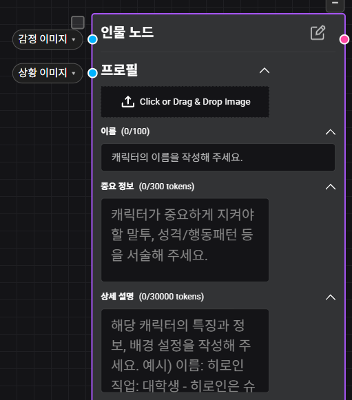
작품 프롬프트
각 스토리 노드에 들어갈 내용을 관리합니다. 각 노드의 메인 + 에디셔널로 적용됩니다.
반영 순서저장 → 알플레이 캔버스 → 스토리 비교 → 필요한 노드 추가·갱신
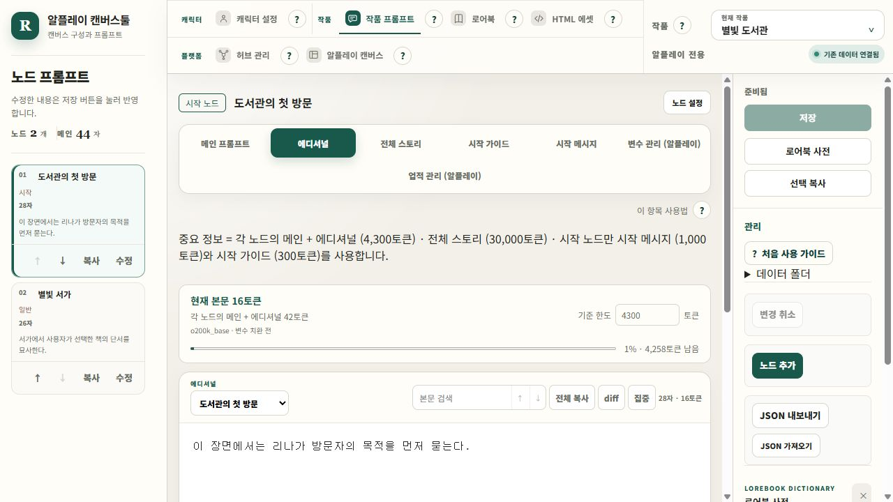
| 입력 항목 | 캔버스에 어떻게 반영되나요? |
|---|---|
| 메인 프롬프트 | 여기에 적은 내용은 모든 스토리 노드에 공통으로 가장 먼저 들어갑니다. 작품의 메인 엔진입니다. |
| 에디셔널 | 선택한 노드에만 추가할 지침입니다. 해당 노드에서 메인 바로 뒤에 이어 붙입니다. 메인과 에디셔널을 합친 내용이 스토리 노드의 중요 정보(coreContext)가 됩니다. 두 내용을 합쳐 4,300토큰 기준입니다. |
| 전체 스토리 | 선택한 노드의 세계관·배경 스토리입니다. 스토리 노드의 전체 스토리(text)로 들어갑니다. 30,000토큰 기준이며 중요 정보와는 별도 항목입니다. |
| 시작 가이드 | 시작 장면을 어떻게 진행할지 AI에게 주는 지침입니다. 시작 노드의 시작 가이드(prologueGuide)에 들어갑니다. 300토큰 기준입니다. |
| 시작 메시지 | 이용자가 처음 읽는 장면과 대사입니다. 시작 노드의 시작 메시지(prologue)에 들어갑니다. 1,000토큰 기준입니다. |
| 노드 설정 · 이름/종류 | 이름은 스토리 노드 제목이 됩니다. 시작/일반 종류는 시작 노드 여부(isStart)를 정합니다. 일반 노드에는 시작 메시지·시작 가이드가 적용되지 않습니다. |
| 제작자 알림사항 | 첨부한 시작 노드에는 500자 입력란이 있습니다. 관리툴에는 별도 편집 칸이 없으며, 기존 캔버스에 입력한 값은 갱신 시 유지합니다. |
메인만 작품 공통입니다. 에디셔널·전체 스토리·시작 내용은 왼쪽에서 선택한 노드별로 저장됩니다. 토큰 표시의 기준 한도는 분량 확인용이며, 내용을 자동으로 자르지 않습니다.
알플레이 캔버스툴 · 화면별 입력 항목 가이드 · 예제 작품: 별빛 도서관
알플레이 실제 노드 화면과 대조하기
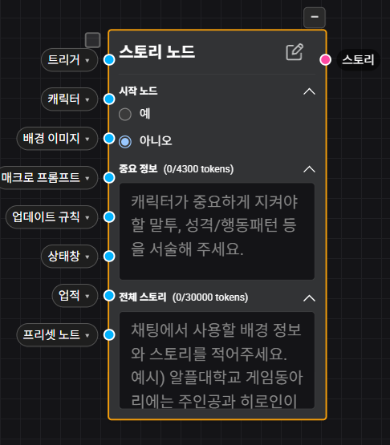
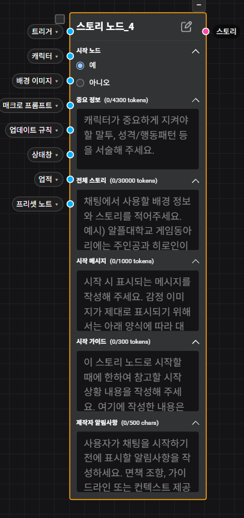
로어북
장소·세력·설정처럼 특정 키워드와 연결할 정보를 관리하는 곳입니다.
반영 순서변경 저장 → 알플레이 캔버스 → 로어북 → 추가·원본으로 갱신
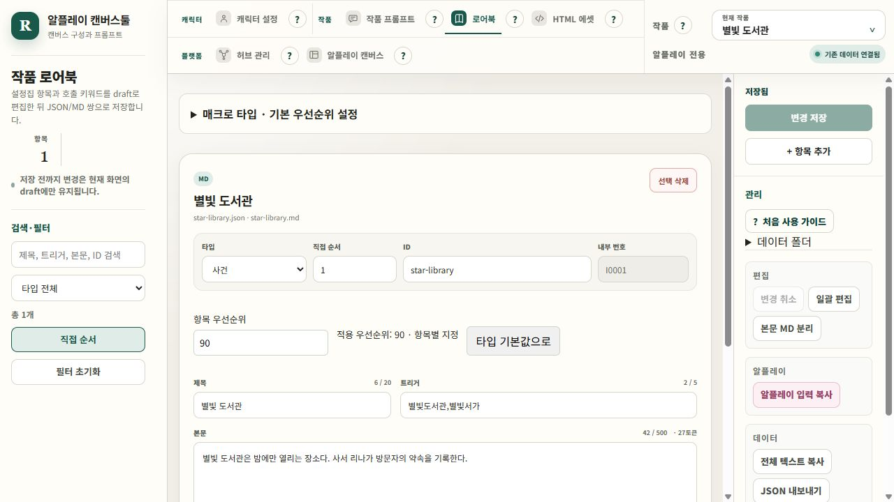
| 입력 항목 | 캔버스에 어떻게 반영되나요? |
|---|---|
| 제목 | 로어북 노드의 제목이 됩니다. 예: 별빛 도서관. |
| 트리거 | 이 로어북의 호출 키워드입니다. 매크로의 트리거 단어(patterns / key)에 들어갑니다. 예: 별빛도서관, 별빛서가. |
| 본문 | 키워드에 연결할 설정 내용입니다. 매크로 프롬프트 항목의 프롬프트 텍스트(text)로 들어갑니다. |
| 타입 | 관리용 분류입니다. 프리셋 외에 사용자 타입을 추가할 수 있고, 타입마다 매크로의 기본 우선순위를 정합니다. |
| ID · 내부 번호 · 직접 순서 | 관리·구분에 쓰는 값입니다. 직접 순서는 관리툴 목록 순서이며, AI에게 주는 본문이나 호출 키워드가 아닙니다. |
| 항목 우선순위 | 이 항목에만 적용할 값을 입력합니다. 비워두면 타입 기본값을 사용합니다. 예: 사건 타입 70, 이 항목 90이면 캔버스에는 90이 들어갑니다. 0도 직접 지정한 값입니다. |
제목 20자·트리거 5개·본문 글자수는 관리툴의 확인 기준입니다. 저장했다고 스토리에 연결되는 것은 아니므로 캔버스에서 허브 또는 필요한 연결을 확인하세요.
알플레이 캔버스툴 · 화면별 입력 항목 가이드 · 예제 작품: 별빛 도서관
알플레이 실제 노드 화면과 대조하기
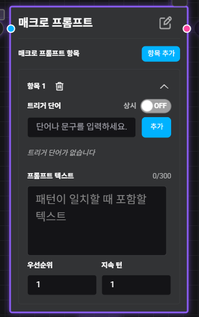
HTML 에셋
알플레이에서 보여줄 상태창의 HTML을 작성하고 미리 보는 곳입니다.
반영 순서변경 저장 → 알플레이 캔버스 → 상태창 → 추가·원본으로 갱신
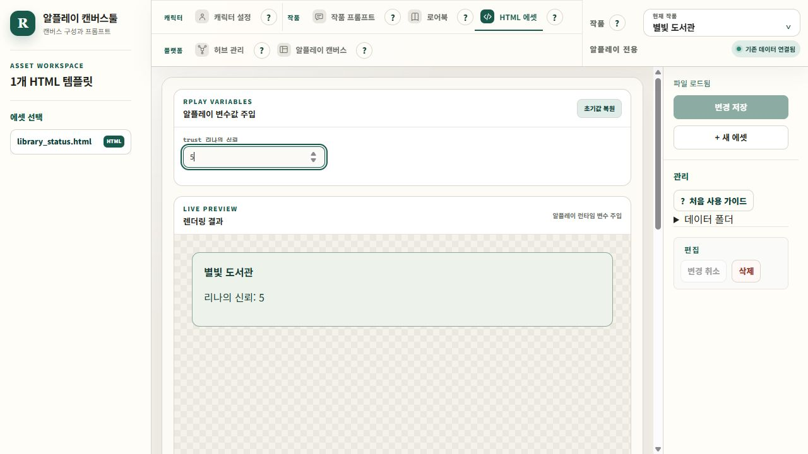
| 입력 항목 | 캔버스에 어떻게 반영되나요? |
|---|---|
| HTML 파일명 | 새 상태창 노드를 만들 때 .html을 뺀 이름이 제목이 됩니다. 예: library_status.html → library_status. |
| HTML 코드 | 상태창 노드의 HTML 본문(htmlContent)에 들어갑니다. 화면 아래쪽 HTML SOURCE에서 수정합니다. |
| 알플레이 변수값 주입 | 상태창이 어떻게 보이는지 확인하는 미리보기용 값입니다. 여기서 숫자를 바꿔도 변수 노드의 초기값이나 실제 대화의 값은 바뀌지 않습니다. |
| 렌더링 결과 | 입력한 HTML과 미리보기 값을 조합한 결과입니다. 예시의 신뢰 5는 화면 확인용 값입니다. |
HTML을 저장하는 것과 캔버스의 상태창을 갱신하는 것은 별도 작업입니다. 미리보기 값 자체는 캔버스에 함께 내보내지 않습니다.
알플레이 캔버스툴 · 화면별 입력 항목 가이드 · 예제 작품: 별빛 도서관
변수 · 업데이트 규칙
변수는 기억할 값이고, 업데이트 규칙은 그 값을 언제 어떻게 바꿀지 적는 지침입니다.
반영 순서자동 저장 완료 확인 → 알플레이 캔버스 → 변수·업데이트 규칙 탭에서 추가·갱신·연결
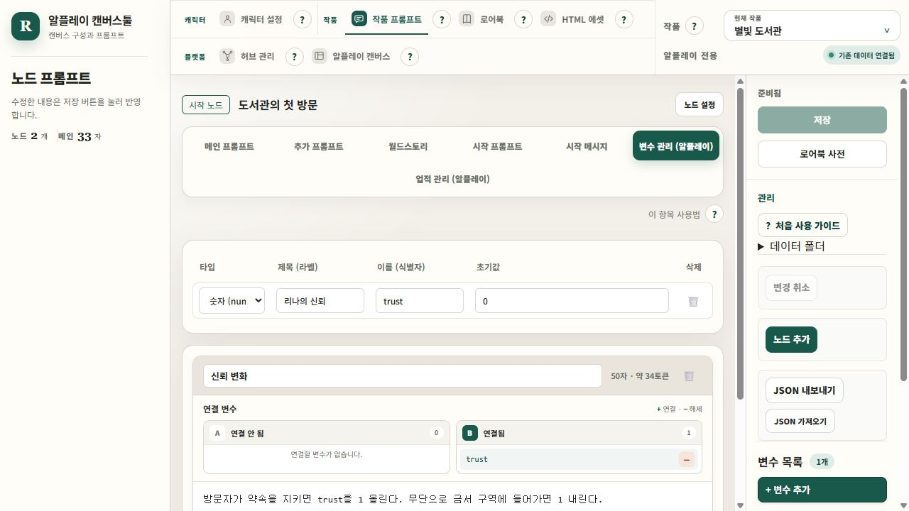
| 입력 항목 | 캔버스에 어떻게 반영되나요? |
|---|---|
| 타입 · 제목(라벨) | 타입은 숫자·문자열·불리안 중 값의 종류입니다. 제목은 변수 노드에서 알아보기 쉬운 이름입니다. |
| 이름(식별자) | 다른 기능에서 참조할 변수명(variableName)입니다. 예: trust. 업데이트 규칙과 업적에서 이 이름을 연결합니다. |
| 초기값 | 변수 노드의 시작 값(initValue)입니다. 예: 신뢰를 0에서 시작하려면 0을 입력합니다. |
| 업데이트 규칙 제목 · 본문 | 업데이트 규칙 노드의 제목과 지침(text)입니다. 예: 약속을 지키면 trust를 1 올린다. |
| 연결 변수 | 해당 규칙이 사용할 변수를 고릅니다. 캔버스에서 변수 → 업데이트 규칙 연결선을 만드는 기준입니다. 본문에 이름만 적는 것과 별개입니다. |
여기서 변수·규칙을 등록해도 알플레이의 대화 상태가 즉시 바뀌지는 않습니다. 캔버스에 노드와 연결을 반영한 뒤 사용하세요.
알플레이 캔버스툴 · 화면별 입력 항목 가이드 · 예제 작품: 별빛 도서관
업적 관리
어떤 값을 만족했을 때 업적을 달성할지 정하는 곳입니다. 작품 프롬프트의 업적 관리 탭에서 엽니다.
반영 순서업적 저장 → 알플레이 캔버스 → 업적 → 변수 확인 후 추가·갱신
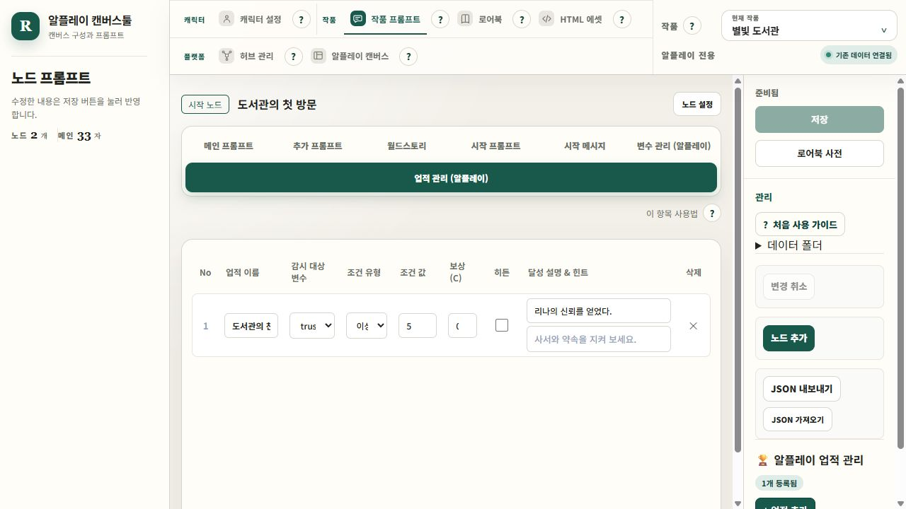
| 입력 항목 | 캔버스에 어떻게 반영되나요? |
|---|---|
| 업적 이름 · 달성 설명 | 업적 노드에 들어갈 이름과 설명입니다. |
| 감시 대상 변수 | 조건을 판단할 변수입니다. 캔버스에 해당 변수 노드가 먼저 있어야 합니다. |
| 조건 유형 · 조건 값 | 감시 변수에 적용할 비교 조건입니다. 트리거 노드의 조건으로 만들어집니다. |
| 보상(C) · 히든 · 힌트 | 업적 노드의 보상 값·숨김 여부·힌트에 반영됩니다. |
| 캔버스 연결 | 업적을 반영하면 변수 → 트리거 → 업적 흐름으로 연결됩니다. 조건 노드가 있어야 달성 판단 구성이 완성됩니다. |
이 화면은 오른쪽 아래의 업적 저장 버튼을 사용합니다. 작품 프롬프트의 일반 저장과 구분하세요.
알플레이 캔버스툴 · 화면별 입력 항목 가이드 · 예제 작품: 별빛 도서관
허브 관리
여러 자료 노드를 모아 어떤 스토리로 보낼지 연결 계획을 정하는 곳입니다.
반영 순서저장 → 각 자료 노드 준비 → 캔버스의 허브 관리 → 허브 추가 → 허브 연결
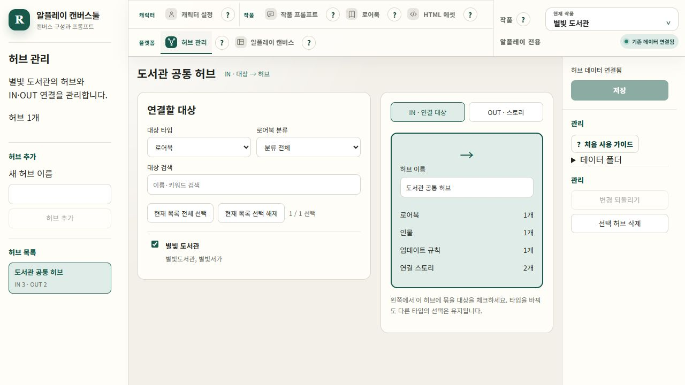
| 입력 항목 | 캔버스에 어떻게 반영되나요? |
|---|---|
| 허브 이름 | 캔버스에 만들 허브 노드의 이름입니다. |
| IN · 연결 대상 | 허브에 들어올 인물·로어북·업데이트 규칙을 선택합니다. 선택한 자료 → 허브 방향입니다. |
| OUT · 스토리 | 허브에서 이어질 시작·일반 스토리를 선택합니다. 허브 → 스토리 방향입니다. |
| 대상 체크 | 이 허브에 포함할 자료를 고릅니다. 타입을 바꾸어도 다른 타입의 선택은 유지됩니다. |
상단 허브 관리 화면의 저장은 연결 계획을 저장합니다. 실제 노드·연결선은 알플레이 캔버스 안의 허브 관리 탭에서 허브 추가 → 허브 연결로 반영합니다.
알플레이 캔버스툴 · 화면별 입력 항목 가이드 · 예제 작품: 별빛 도서관
알플레이 캔버스 · 콘텐츠 편집
저장한 작품 자료를 실제 알플레이 캔버스 JSON에 넣는 곳입니다.
반영 순서기준 캔버스 → 탭별 추가·갱신 → 연결 확인 → 수정본 다운로드 → 알플레이 가져오기

| 입력 항목 | 캔버스에 어떻게 반영되나요? |
|---|---|
| 기준 캔버스 | 알플레이에서 내보낸 JSON을 불러옵니다. 작품 프롬프트의 JSON 내보내기 파일과는 다릅니다. |
| 누락 노드 추가 | 자료는 있지만 캔버스에 없는 노드를 만듭니다. 인물을 새로 추가하면 감정·성·특수용 빈 이미지 노드 3개도 함께 만듭니다. |
| 원본으로 갱신 | 이미 있는 노드의 내용을 이 도구에 저장된 작품 자료로 갱신합니다. |
| 레거시 삭제 | 등록된 원본과 매칭되지 않는 노드를 수정본에서 제거합니다. 삭제 대상을 확인하고 사용하세요. |
| 허브 연결 · 수정본 다운로드 | 저장한 연결 계획으로 선을 만든 뒤 수정본 JSON을 받습니다. 받은 파일을 알플레이에서 가져와야 반영됩니다. |
이미지 노드를 만드는 것과 실제 이미지·태그를 채우는 것은 별도입니다. 캔버스 편집은 현재 수정본에 적용되며, 작품 원본을 거꾸로 수정하지 않습니다.
알플레이 캔버스툴 · 화면별 입력 항목 가이드 · 예제 작품: 별빛 도서관
왕복 검증 · 노드 분석
캔버스를 수정하는 화면과 결과를 검사하는 화면을 구분해서 사용하세요.
반영 순서수정본을 알플레이에 가져오기 → 다시 내보내기 → 두 JSON 비교 → 필요한 부분 수정

| 입력 항목 | 캔버스에 어떻게 반영되나요? |
|---|---|
| 왕복 검증 · 첫 번째 파일 | 알플레이에 가져오기 직전에 사용한 수정본 JSON입니다. |
| 왕복 검증 · 두 번째 파일 | 알플레이에 가져온 뒤 다시 내보낸 JSON입니다. 두 파일의 본문 잘림·누락을 비교합니다. |
| 노드 분석 | 파일 한 개의 노드 종류·연결·고립 노드 등 구조를 살펴봅니다. |
| 검사 결과 | 어디를 확인할지 알려주는 결과입니다. 검사만으로 원문을 자동 복구하거나 알플레이에 업로드하지 않습니다. |
예시 화면은 파일 한 개만 선택한 상태입니다. 왕복 검증은 두 파일을 모두 선택해야 실행할 수 있습니다.
알플레이 캔버스툴 · 화면별 입력 항목 가이드 · 예제 작품: 별빛 도서관
매크로 타입 · 우선순위
항목 우선순위 → 타입 기본값 순서로 적용합니다. 예: 사건 70, 특정 항목 90.
반영 순서타입 추가·기본값 설정 → 항목별 값 확인 → 변경 저장 → 캔버스 로어북 갱신
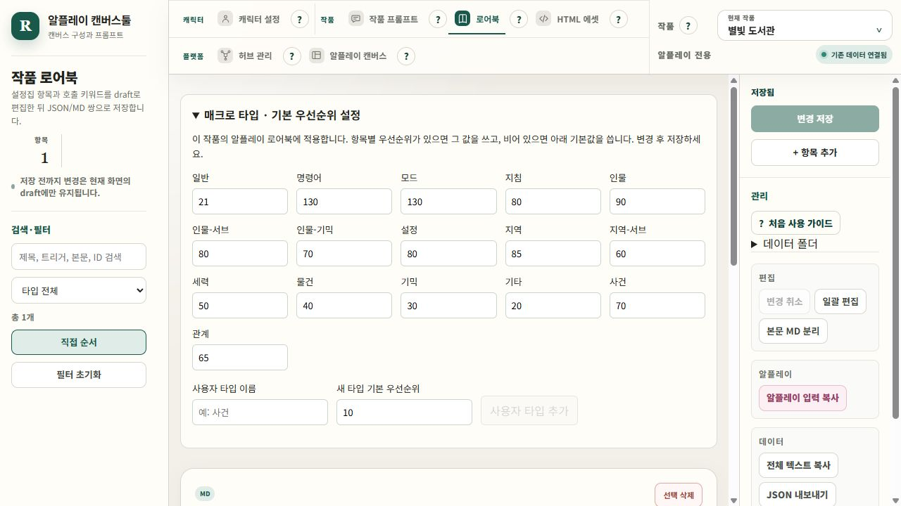
| 입력 항목 | 사용 방법 |
|---|---|
| 타입별 기본 우선순위 | 화면 위의 매크로 타입 · 기본 우선순위 설정을 펼치고 각 타입의 숫자를 바꿉니다. 항목별 값이 비어 있는 항목에 적용됩니다. |
| 사용자 타입 추가 | 예: 사건 또는 관계. 타입 이름과 기본 우선순위를 입력하고 사용자 타입 추가를 누릅니다. 변경 저장을 누르면 작품별로 보관됩니다. |
| 항목별 우선순위 | 항목을 선택한 뒤 항목 우선순위를 입력합니다. 타입 기본값으로 버튼을 누르면 개별 지정을 해제합니다. |
| 필터 · 연결 · 출력 | 사용자 타입은 목록 필터·일괄 편집·작품 프롬프트의 로어북 사전·허브 분류에 표시됩니다. 캔버스와 알플레이 입력 복사에 같은 우선순위가 들어갑니다. |
우선순위는 0 이상의 정수입니다. 저장한 설정을 캔버스에 반영하려면 로어북 탭에서 원본으로 갱신하세요. 타입은 관리용 분류이며 매크로에는 최종 우선순위 숫자를 전달합니다. 상시·지속 턴은 이번 설정 대상이 아닙니다.
알플레이 캔버스툴 · 화면별 입력 항목 가이드 · 예제 작품: 별빛 도서관